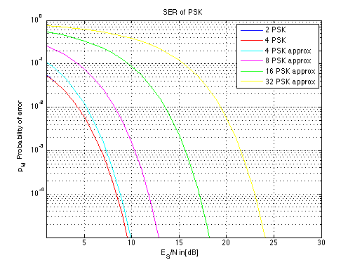

SER of PSK
Copyright 2007 Telecommunications Lab
ES_N_dB=[1:40]; ES_N_lin=10.^(0.1*ES_N_dB); p_e(1,:)=0.5*erfc(sqrt(ES_N_lin)); p_e(2,:)=0.5*erfc(sqrt(ES_N_lin)).*(1-0.25*erfc(sqrt(ES_N_lin))); p_e(3,:)=erfc(sqrt(ES_N_lin)*sin(pi/(2))); p_e(4,:)=erfc(sqrt(ES_N_lin)*sin(pi/(4))); p_e(5,:)=erfc(sqrt(ES_N_lin)*sin(pi/(8))); p_e(6,:)=erfc(sqrt(ES_N_lin)*sin(pi/(16))); subplot(1,1,1); semilogy(ES_N_dB,p_e(1,:),ES_N_dB,p_e(2,:),'r',ES_N_dB,p_e(3,:),'c',ES_N_dB,p_e(4,:),'m',ES_N_dB,p_e(5,:),'g',ES_N_dB,p_e(6,:),'y','LineWidth',1.5); legend('2 PSK','4 PSK','4 PSK approx','8 PSK approx','16 PSK approx','32 PSK approx') title('SER of PSK') xlabel('E_S/N in[dB]') axis([1 30 0.00001 1]) ylabel('p_M Probability of error') grid on;